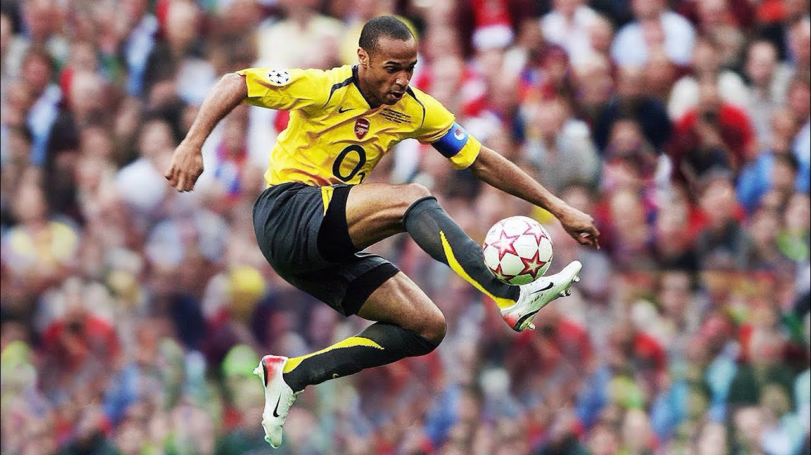

Playing Career
Monaco
Divivsion 1: 1996-97
Arsenal
Premier League: 2001-02, 2003-04
Fa Cup: 2001-02, 2002-03
Fa Community Shield: 2002, 2004
UEFA Champions League Runner-Up: 2005-2006
UEFA Cup runner-up: 1999-2000
Barcelona
La Liga: 2008-09, 2009-10
Copa Del Rey: 2008-09
Supercopa de Espana: 2009
UEFA Champions League: 2008-09
UEFA Super Cup: 2009
FIFA Club World Cup: 2009
New York Red Bulls
Supporters' Sheild
France
FIFA World Cup; 1998 Runner-Up: 2006
UEFA European Championship: 2000
FIFA Confederations Cup